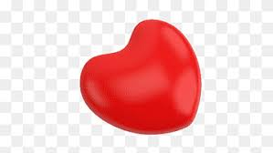

содержание подзаголовка
гиперссылка на другой сайт - your site
alt — устанавливается альтернативный текст для изображения. Текстовая информация отображается при отключенной загрузке графики в браузере пользователя и дает понять, что изображено на этой картинке. Помимо этого, данный атрибут также необходим для поисковых систем – таким образом они индексируют изображение и выводят пользователю подходящий результат. Может содержать русскую раскладку.